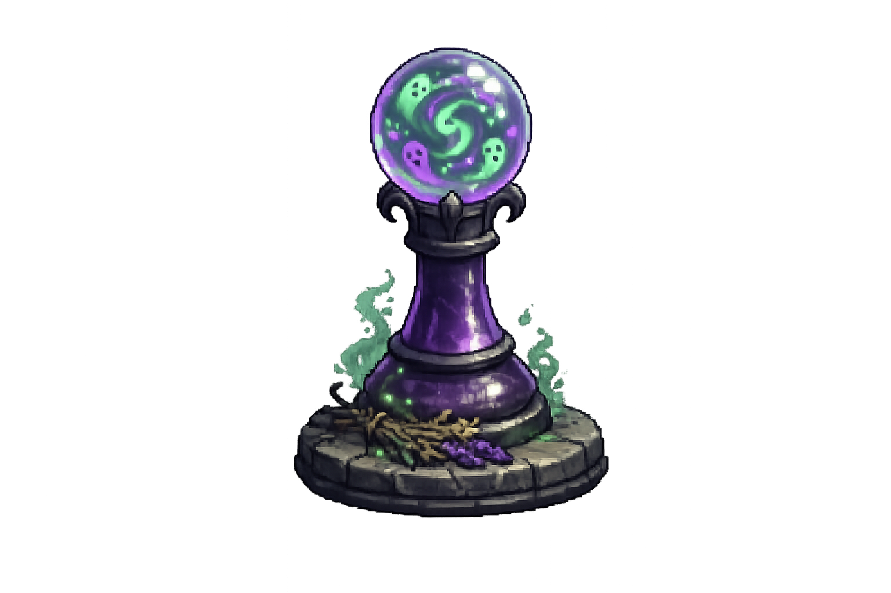
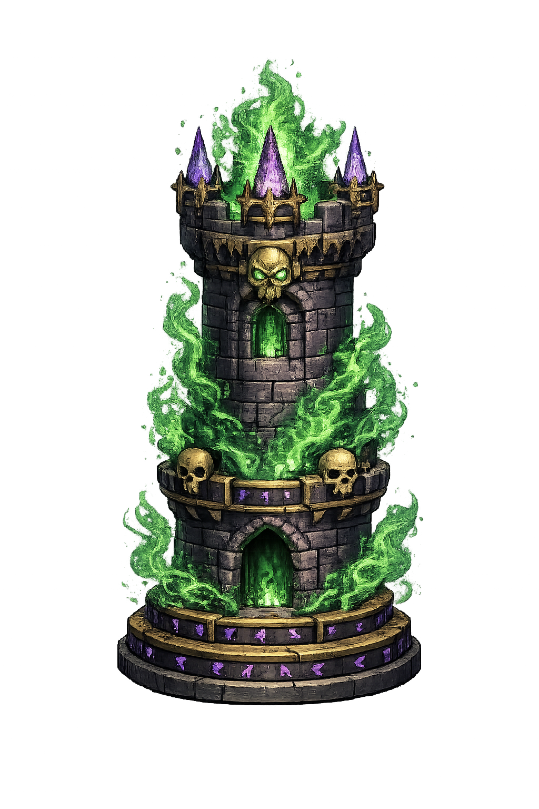
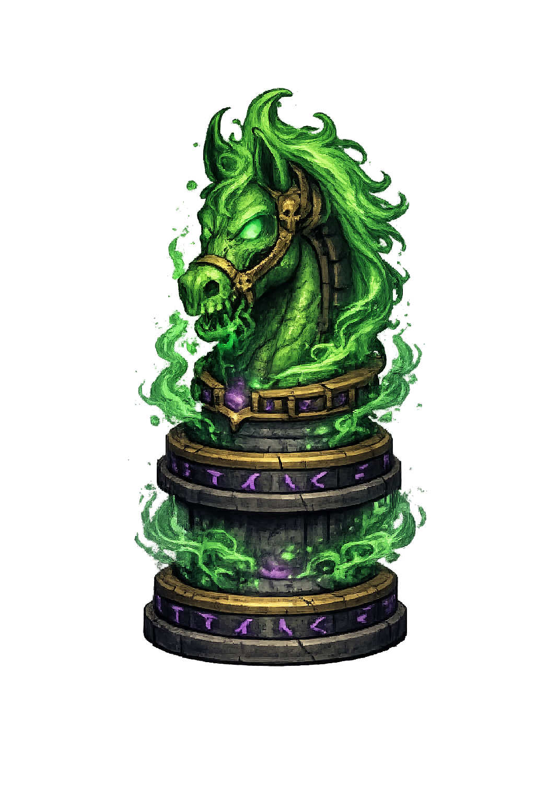
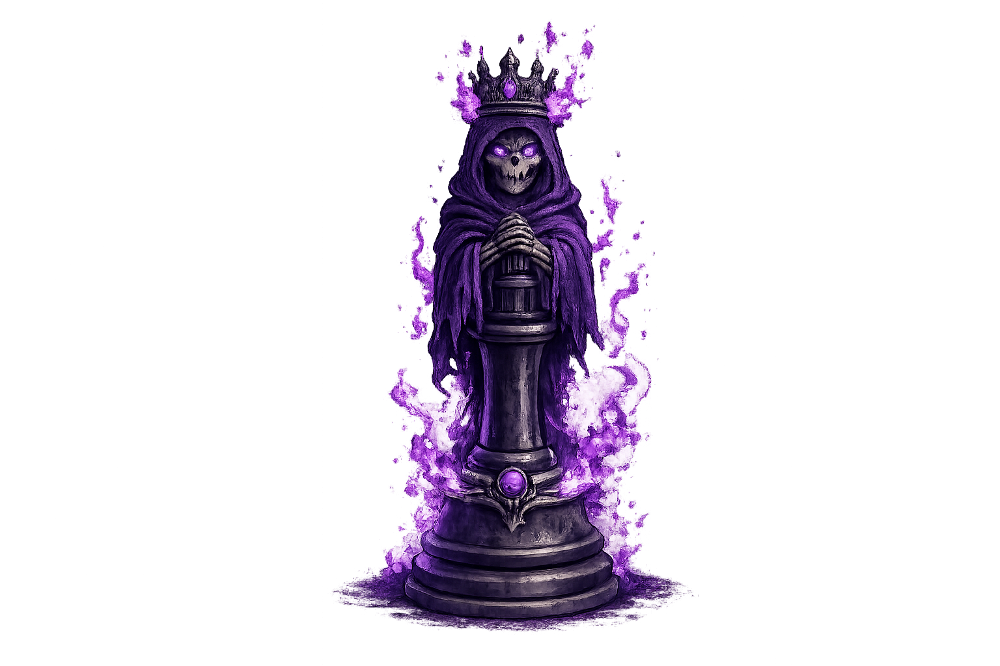

Valor e Recompensas
No Xadrezinho, capturar uma peça não apenas enfraquece o adversário, mas também alimenta a sua conta do banco! Cada peça tem um valor e garante pontos essenciais para comprar na Loja de Feitiços durante a batalha. Eis a cotação de cada abate:

Peão
3Comida de canhão, mas valem alguma coisa.

Torre
5As muralhas que valem uma boa grana.
Bispo
6Atiradores furtivos valiosos.

Cavalo
7Um prêmio de alto valor estratégico.

Rainha
12A joia da coroa. Recompensa máxima!
O Preço do Sangue — Maldições
Nem toda peça foi feita para derramar tanto sangue sem consequências. Quando uma de suas peças
captura inimigos demais, as almas acumuladas a amaldiçoam
— e ela ganha um poder sombrio e devastador. 💀
Clique com o botão direito do mouse em uma peça amaldiçoada
(identificada pelo ícone 💀) para ativar a habilidade. A maldição é consumida e a peça volta ao
normal — porém o efeito pode ser irreversível para o adversário.
Ativar uma maldição não consome o turno do jogador. Você
pode maldizer e ainda jogar na mesma rodada!
💀 Maldição do Peão
O humilde peãozinho está traumatizado com a barbárie que cometeu. A partir de
agora, ele esquece tudo que sabia sobre "avançar em linha reta" e passa a se mover exatamente
como um Rei: uma casa em qualquer direção, e capturando normalmente.
Sim, o seu peão proletário ganhou status de realeza. Pelo resto da vida.
*O Rei olhou para o peão, olhou para a tropa, e decidiu não comentar nada.*
💀 Maldição do Cavalo
Após derramar o sangue de dois inimigos, o Cavalo enlouquece de poder e aprende o antigo ritual
da Troca de Almas: ao ativar, você escolhe qualquer outra peça aliada
(exceto o Rei) e o Cavalo troca de posição com ela instantaneamente.
Ideal para resgatar uma peça valiosa de uma posição horrível. Ou simplesmente para confundir o
adversário de vez.
*"Táxi!" – gritou o Bispo, encurralado no canto. O Cavalo chegou em 0.3 segundos.*
💀 Maldição do Bispo
O Bispo já andava pelas diagonais cochichando orações sombrias. Após 2 capturas, ele finalmente
aprende a Execução à Distância: escolha qualquer peça inimiga nas suas
diagonais
e ela será capturada instantaneamente — sem que o Bispo precise se mover um centímetro.
Alcance máximo, sem deslocamento. Pura execução remota à la sniper religioso.
*"A Rainha inimiga estava a 7 casas de distância. O Bispo nem levantou da cadeira."*
💀 Maldição da Torre
Duas capturas transformaram a Torre em uma Fortaleza Sagrada. Ao ativar, ela
cria uma zona de proteção azul de 1 casa de raio ao redor dela. Todas as peças
aliadas nessa área ficam imunes a capturas por 5 turnos.
Marcadores azuis aparecem no tabuleiro indicando as casas protegidas. Mova suas peças para
dentro
do escudo e reze para o adversário não ter um Bispo amaldiçoado.
*"Venha, atravesse meu campo de força. Eu espero."* — Torre, provavelmente.*
💀 Maldição da Rainha
Ah, a Rainha. Já não era suficientemente aterrorizante. Após 2 capturas, ela desperta o poder do
Necromancer: cada vez que capturar uma peça inimiga,
uma cópia dessa peça — que jura lealdade a você — surge imediatamente no tabuleiro.
Imagina capturar o Cavalo do adversário e vê-lo ressurgir no seu time. Ele não vai gostar. Você
vai adorar.
*"Você me destrói uma peça, eu crio duas. Matemática simples."* — A Rainha, toda modesta.*
Loja de Magia
Use suas moedas arduamente ganhas para comprar feitiços diretamente no tabuleiro de batalha. A cada partida, 4 feitiços aleatórios ficam disponíveis na loja — a lista abaixo revela todos os possíveis. Comprar um poder consome o turno do jogador. Use a sua vez com sabedoria.
Escudo Covarde
Escolha uma peça sua (exceto o rei) e envolva-a num escudo mágico. A próxima vez que o adversário tentar capturá-la... nada acontece! A peça sobrevive e o escudo some. Perfeito para proteger sua Rainha enquanto ela está fazendo coisas ilegais no canto do tabuleiro.
💰 20 moedas Compre para a peça mais valiosa que estiver em perigo.Espelho
Clona uma de suas peças (exceto rei e rainha) e materializa a cópia em uma casa adjacente vazia. Dois Cavalos? Por favor. Dois Bispos amaldiçoados? Isso é um crime de guerra — mas quem estamos nós para julgar?
💰 6 moedas Funciona melhor em peças já evoluídas ou com capturas próximas da maldição.Sonegar Impostos
Entra no mercado negro e por 6 turnos você ganha o DOBRO de moedas por cada captura. A Receita Federal não pode te prender no tabuleiro. Aproveite enquanto dura.
💰 10 moedas Combina muito bem com uma sequência agressiva de capturas logo em seguida.Armadilha
Escolha qualquer casa vazia do tabuleiro e coloque uma armadilha invisível que dura 8 turnos. Se qualquer peça — inimiga ou aliada — pisar nessa casa, ela é destruída instantaneamente. Sem pontos de captura. Sem avisos. Só um puf e sumiu.
💰 7 moedas Coloque em casas que o adversário provavelmente vai passar. Também funciona para trollar você mesmo, mas aí é culpa sua.Caminho Congelante
Evoca uma nevasca mágica em uma coluna inteira do tabuleiro. Durante 4 turnos, o adversário não pode mover nenhuma peça que esteja nessa coluna. Ideal para bloquear uma Torre furiosa ou aquele Peão que estava quase virando Rainha.
💰 12 moedas Use em colunas centrais ou onde o adversário está prestes a promover um Peão.Corrente
Escolha uma de suas peças e lança uma corrente mágica. A peça inimiga mais próxima na vertical é puxada até o lado da sua peça — mesmo que ela não queira. Nenhuma peça pediu pra ser arrastada assim, mas acontece.
💰 8 moedas Use para posicionar inimigos em casas perigosas ou dentro do alcance das suas peças.Fantasma da Noite
Escolha uma peça sua (exceto Rei e Rainha) e ela passa a ser um Fantasma eterno: pode atravessar qualquer peça aliada pelo resto da partida. Paredes? Não existem. Bloqueios? Conceito ultrapassado. A peça simplesmente atravessa tudo sem pedir licença.
💰 20 moedas Poderoso em Cavalos e Bispos — eles já têm mobilidade, agora têm mobilidade fantasmagórica.Inferno
Amaldiçoa todas as suas peças de uma vez. Todas elas
recebem o ícone 💀 imediatamente — prontas para ativar suas respectivas habilidades de maldição
quando você quiser. Porque às vezes a sutileza é superestimada.
Atenção: disponível apenas após 20
turnos. O caos responsável precisa de um warmup.
Eventos & Calamidades
A MOEDA MILAGROSA
A economia do Xadrezinho é turbulenta. A cada 5 turnos consecutivos sem nenhuma captura efetuada por qualquer jogador, uma Moeda de Ouro radiante aparece em uma casa totalmente aleatória que esteja vazia no campo!
Corra! O primeiro general que mover corajosamente sua peça em cima dessa casa coletará instantaneamente impressionantes +10 MOEDAS para sua própria bolsa! O placar e a vez são passados imediatamente, zerando a contagem de turnos novamente.
O FURACÃO CELESTIAL — METEORO
O cosmos não perdoa heróis nem vilões. O tabuleiro é fustigado ocasionalmente pela queda catastrófica de um meteoro flamejante!
Isso acontece exatamente a cada 12 turnos totais. Um aviso ardente aparecerá destacando uma zona central de 2x2 blocos, avisando a calamidade que está por vir. Um letreiro de pânico de 3 TURNOS será ativado — qualquer general que deixar as suas peças naquelas 4 casas ao final do terceiro aviso provará as chamas e não receberá nenhuma recompensa. Até escudos são destruídos.
Runas Passivas
Antes de cada partida local, cada jogador escolhe uma Runa — um bônus passivo que permanece ativo durante toda a batalha. Escolha com sabedoria: a runa certa pode mudar completamente sua estratégia.
Runa Azul
A cada poder comprado na Loja de Magia, você recebe de volta 40% do custo gasto em moedas. Economia é poder — literalmente. Com essa runa, você compra mais feitiços que o adversário sem precisar capturar tanto.
💙 Passiva: Reembolso Automático Ideal para quem gosta de comprar poderes com frequência.Runa Roxa
Enquanto seus peões estiverem nas casas originais, eles se tornam transparentes para suas outras peças. Torres, Bispos, Rainhas e até Reis podem atravessá-los livremente, como se não existissem. Seus peões só bloqueiam quando saem da posição inicial.
💜 Passiva: Peões Fantasmas Poderosa para desenvolver peças rapidamente no início da partida.Runa Vermelha
Quando sua Rainha for capturada, ela
renasce automaticamente na casa original (d1 ou d8)
assim que a posição estiver livre. Se a casa estiver ocupada, ela aguarda pacientemente.
Atenção: a rainha só renasce uma
única vez por partida.